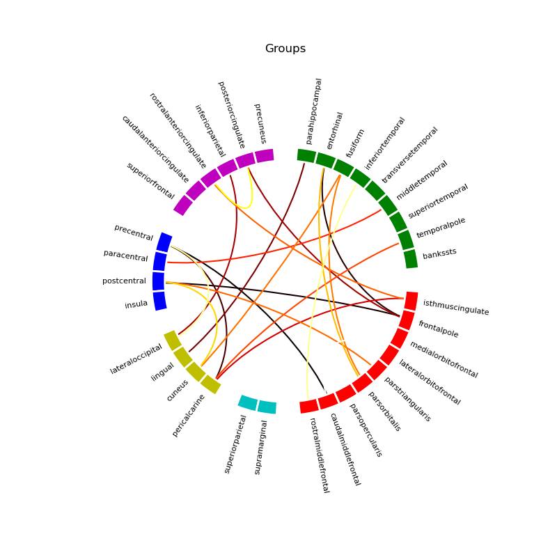
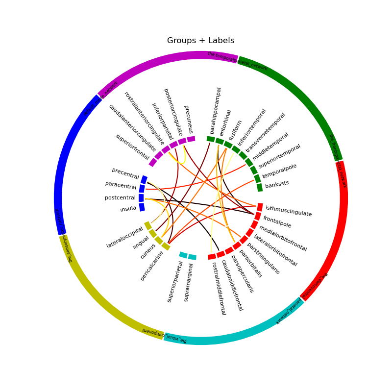

Note
Go to the end to download the full example code
Generic Grouped Connectivity Circle¶
Script exposing circle plots with outer ring.
Author: Praveen Sripad <pravsripad@gmail.com>
- 
- 
import os.path as op
from jumeg.connectivity import (plot_generic_grouped_circle,
plot_fica_grouped_circle,
generate_random_connectivity_matrix)
from jumeg import get_jumeg_path
# load the yaml grouping of Freesurfer labels
yaml_fname = op.join(get_jumeg_path(), 'data/rsn_desikan_aparc_cortex_grouping.yaml')
# make a random matrix
con = generate_random_connectivity_matrix(size=(34, 34), symmetric=True)
# load the label names in the original order
# this should be same order as the connectivity matrix
labels_fname = op.join(get_jumeg_path(), 'data/fica_names.txt')
with open(labels_fname, 'r') as f:
orig_labels = [line.rstrip('\n') for line in f]
# plot the connectivity circle grouped
plot_generic_grouped_circle(yaml_fname, con, orig_labels,
node_order_size=34,
out_fname='fig_fica_circle.png',
show=False, n_lines=20,
title='Groups')
# plot the connectivity circle with outer group labels ring
plot_fica_grouped_circle(yaml_fname, con, orig_labels,
node_order_size=34,
out_fname='fig_fica_circle_with_names.png',
show=False, n_lines=20,
title='Groups + Labels')
Total running time of the script: ( 0 minutes 1.582 seconds)